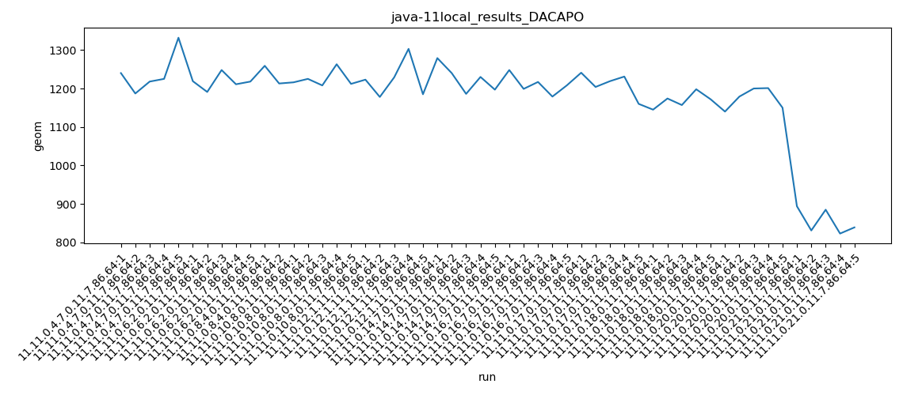

java-11 DACAPO
Context at bottom
/home/jvanek/git/benchmarks-in-nested-virtualisation-toolchain/final_results/local_results/local_results_JMH
java-11
DACAPO
/home/jvanek/git/benchmarks-in-nested-virtualisation-toolchain/final_results/local_results/local_results_J2DBENCH
java-11
DACAPO
/home/jvanek/git/benchmarks-in-nested-virtualisation-toolchain/final_results/local_results/local_results_RADARGUNs1
java-11
DACAPO
/home/jvanek/git/benchmarks-in-nested-virtualisation-toolchain/final_results/local_results/local_results_RADARGUNs3
java-11
DACAPO
/home/jvanek/git/benchmarks-in-nested-virtualisation-toolchain/final_results/local_results/local_results_SPECJBB
java-11
DACAPO
/home/jvanek/git/benchmarks-in-nested-virtualisation-toolchain/final_results/local_results/local_results_DACAPO
java-11
DACAPO
local_results_DACAPO
final score
Expected number of java-11 JDKs: 7
1st avgmed_alljdks_metric:
/home/jvanek/git/benchmarks-in-nested-virtualisation-toolchain/final_results/result_processing.py /home/jvanek/git/benchmarks-in-nested-virtualisation-toolchain/final_results/local_results/local_results_DACAPO geom False
values: [1240, 1187, 1218, 1225, 1332, 1219, 1191, 1248, 1211, 1218, 1259, 1213, 1216, 1225, 1208, 1263, 1212, 1223, 1178, 1229, 1303, 1185, 1279, 1240, 1186, 1230, 1197, 1248, 1199, 1217, 1179, 1208]

Expected number of iterations: 5
final number of values: 32 out of 35
Pass rate: 91.4%
values: (1178, 1332, 1224.5625, 1218)

** accuracy from all jdks and runs
more is better
MIN: 1178
MAX: 1332
AVG: 1224.5625
MED: 1218
Relative differences 1:
MIN-MAX: 12.0 %
MIN-AVG: 4.0 %
MIN-MED: 3.0 %
MAX-MIN: -13.0 %
MAX-AVG: -9.0 %
MAX-MED: -9.0 %
AVG-MED: -1.0 %
stored to java-11.properties. sort | uniq that!
2nd avgmed_by_jdk_metric:
values: [1240.4, 1217.4, 1236.0, 1224.8, 1223.6, 1226.4, 1210.2]

values: [1225, 1218, 1259, 1216, 1223, 1230, 1208]

values: (1210.2, 1240.4, 1225.542857142857, 1224.8)
values: (1208, 1259, 1225.5714285714287, 1223)

** accuracy from all jdks where runs were avged
more is better
MIN: 1210.2
MAX: 1240.4
AVG: 1225.542857142857
MED: 1224.8
Relative differences 1:
MIN-MAX: 2.0 %
MIN-AVG: 1.0 %
MIN-MED: 1.0 %
MAX-MIN: -2.0 %
MAX-AVG: -1.0 %
MAX-MED: -1.0 %
AVG-MED: -0.0 %
stored to java-11.properties. sort | uniq that!
** accuracy from all jdks where runs were medianed
more is better
MIN: 1208
MAX: 1259
AVG: 1225.5714285714287
MED: 1223
Relative differences 1:
MIN-MAX: 4.0 %
MIN-AVG: 1.0 %
MIN-MED: 1.0 %
MAX-MIN: -4.0 %
MAX-AVG: -3.0 %
MAX-MED: -3.0 %
AVG-MED: -0.0 %
stored to java-11.properties. sort | uniq that!
pass rates:
local_results_DACAPO=91.4%
Context:
- local_results
- DACAPO